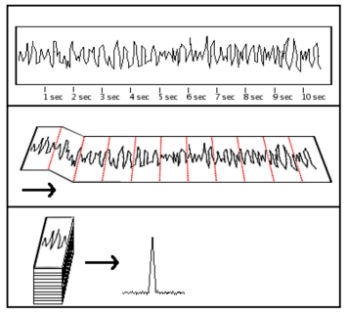
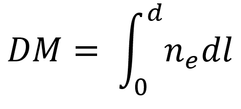
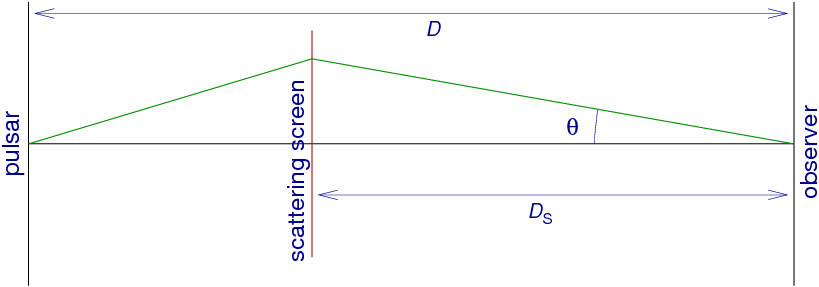

Created by Kyle Gersbach & Dr. Jeff Hazboun
This tool is designed to help those who wish to get a basic understanding of how and why NANOGrav and other Pulsar Timing Arrays conduct data analysis. This application was built using the Pulsar Signal Simulator as well as the Bokeh plotting and interactive tools. This application is still in development. If you have any suggestions or issues, please email me at: Gersbach.KA@gmail.com
For background information to understand the following activities, I suggest reading up on the following websites as the explinations they give will be much better than what I can currently give
https://www.cv.nrao.edu/course/astr534/Pulsars.html
http://www.jb.man.ac.uk/distance/frontiers/pulsars/section4.html
http://astronomy.swin.edu.au/cms/astro/cosmos/p/Pulsar+Dispersion+Measure
If you were to simply point your radio telescope towards a known pulsar, you would see nothing but noise. The only way to actually see these pulsars is to use the process called Folding. Folding is the process of taking a large amount of data, over a long time period and, with some defined period T, we break the data into chunks all with that same time period T. Then add all of the segments at the same part of the phase together, sort of like the picture below:

Notice how the data beforehand looks as if its just completely random, however, if you were to fold the data with the same period as the pulsar you are observing, you notice that the pulse from that pulsar finally become visible. However, if you were to fold the data with the wrong period, you might not see it at all. This is because the location of the pulse on the graph shifts between folds, making it harder to detect.
In this activity, you can move around the slider to adjust the frequency of which you are folding. This frequency corresponds to the period of which you fold through the T=1/F relation. The length of the period will change how long "phase" represents on the x-axis. A higher frequency means that the phase occupies a shorter amount of time and vice versa. You should notice that with a frequency of 218 MHz the pulse is very much visible, as this is the frequency of the simulated pulsar. You might also see that at multiples and fractions of that frequency (i.e. 109 MHz and 436MHz) the pulse(s) is actually still visible, this is due to the harmonics of the pulse and can help lead you to the correct value when searching, where the biggest difference between signal and noise exists.
BREAK HERE
Dispersion is another effect that we must remove when looking for a pulsar. Dispersion is an effect where lower frequencies from a pulsar get delayed more than higher frequencies. The amount of delay is dependent on the amount of material (Free Electrons) between the pulsar and the observer (also called the Interstellar Medium or ISM), as well as the frequencies being observed. The value of the Dispersion Measure is given by the following equation:

In this next activity, you can manually change the dispersion measure and view the resulting plot of Frequency versus Time where higher frequencies are on the top. Do note that when the pulse seems to wander off of one side of the graph and appear on the other, this would actually be from a trailing pulse that came before the current pulse. This means that you could potentially be seeing 3 or more pulses all at the same time, just at different frequencies.
BREAK
Scattering is yet another effect that a pulse from a pulsar can go through. This is primarily caused by a section of a pulse that was initially not directed at the observer, but the refraction from the Interstellar Medium causes those sections to be redirected towards Earth. In the same way light bends as it enters a new medium, like a cup of water, light also gets refracted by the Interstellar Medium. Due to the differing lengths that sections of the pulse travels, the resulting observations can generate a tail often called a scattering tail. This diagram helps to explain why the pulse can have a tail:

Because this phenomenon is frequency dependent, lower frequencies are affected by it more than higher frequencies, the following activity shows that with lower frequencies you see this tail on the end of the pulsar, while at higher frequencies the pulse is much more gaussian. Keep in mind that this is what a scattering tail would look like in a perfect world, and our observations look much messier.
This work was partially funded by Grant 1430284 through the NSF NANOGrav Physics Frontiers Center.